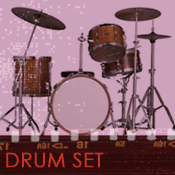

Pure rhythm instruments articulate rhythmic patterns, keep time and tempo, and define the style of jazz being performed. While jazz drummers or percussionists do play solos, most of the time they perform the functions just mentioned
Drum Set (aka Trap Set, Traps, Kit, Drum Kit)The jazz drum set probably developed from the percussion instruments used in a marching or military band, but set up so that one player could perform on them all at once. The drum set is played with sticks, brushes, or mallets.
The drum set includes families of drums and cymbals. A typical drum set features a large, low-pitched bass drum (that is played with a mechanical pedal that is activated by the drummer's foot), tom-toms (medium-pitched drums), and a snare drum that features the sizzling sound of the 'snares' from military drums. The 'snares' are now metal wires strung across the bottom head of the drum that vibrate sympathetically when the top head of the drum is struck, creating a sizzling sound.
The are quite a wide range of cymbals used by jazz drummers. The most common are the
The drum set is a relatively new instrument that came together in the early part of the twentieth century. The drum set has rhythmic, tempo, and 'time keeping' roles in jazz. It is an especially important instrument that keeps the pace of the music steady in a metronomic fashion, since dance music remains an important legacy in jazz.
Watch and listen to drummer Jack DeJohnette. Watch and listen to the example.
There is a huge range of additional percussion instruments that maybe found in jazz besides the drum set. Later in the course, when we consider jazz fusion styles that connect with African, Caribbean, and South American musical styles, we will discuss the many auxiliary percussion instruments used in jazz as we encounter them.
For now, watch and listen to Airto Morera perform on a variety of
Latin percussion
instruments. Watch
and listen to the example.